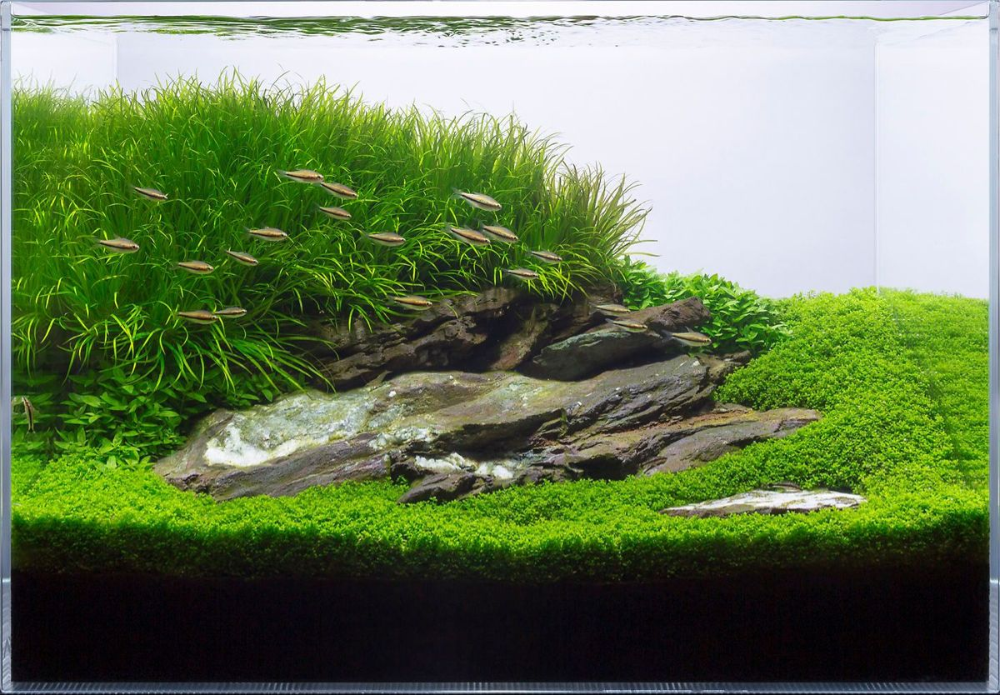

Aquascaping Techniques
Aquascaping is the art of arranging aquatic plants, rocks, and decorations inside an aquarium.

Nature style uses plants and driftwood to resemble natural landscapes like forests and mountains.
Why is Aquascaping Important?
Aquascaping helps improve the environment inside the tank. It provides shelter for fish and helps water stay clean by supporting plant growth.
Basic Tools Used
- Plant Scissors – to trim plants neatly
- Aquascaping Tweezers – to place small plants
- Substrate Shovel – to shape the sand and soil